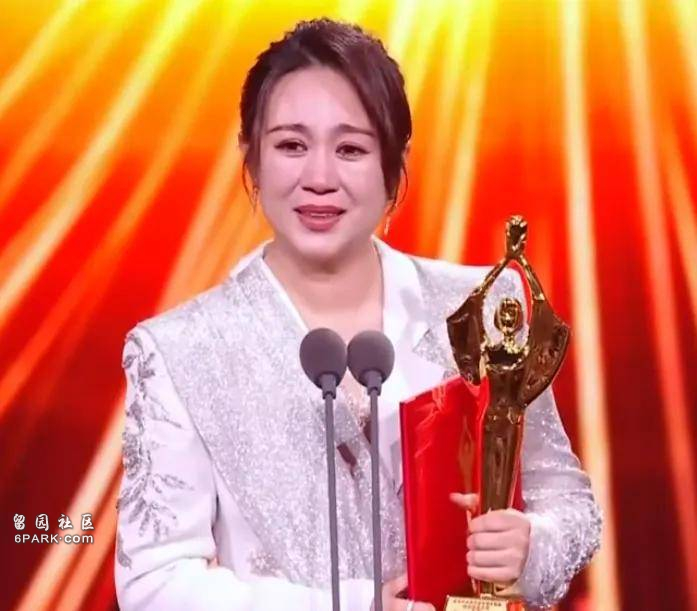
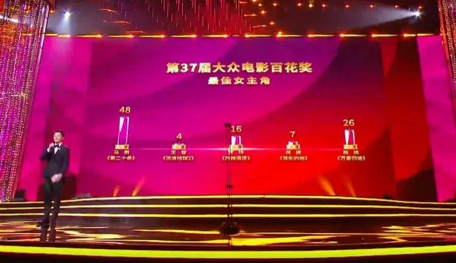
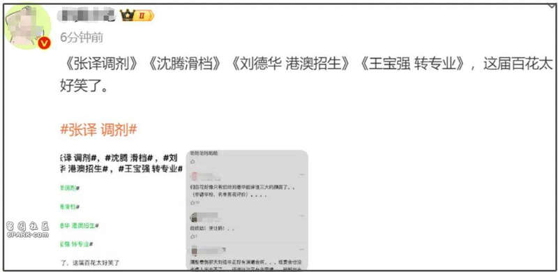
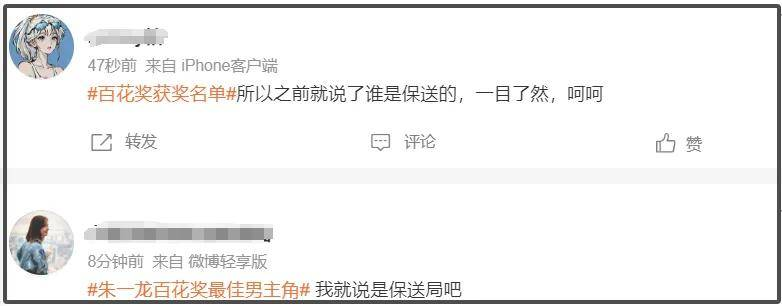
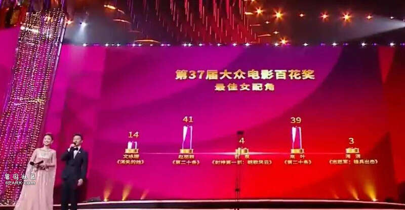
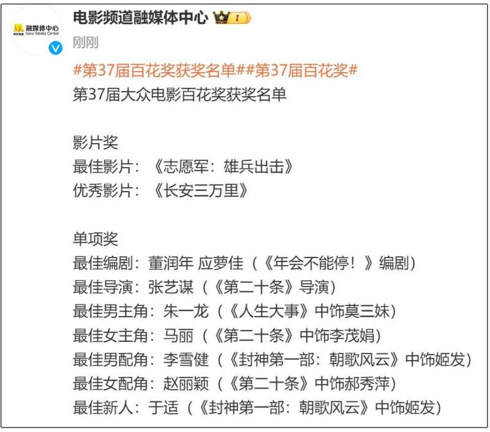

第37届大众电影百花奖颁奖礼来了！前排先恭喜新鲜出炉的百花奖影帝和影后吧，他们分别是36岁男星朱一龙和42岁女星马丽。

作为中国电影三大奖之一的百花奖，本身就更偏重票房和人气，从初选阶段就对参选电影票房做出要求，颁奖礼现场更是采用实时投票的模式，也是增加了不少看点。

马丽获得百花奖影后之后，忍不住当场大哭，这也是她拿到的第一个主流影后奖项，在获奖感言中提到了喜剧演员的不易。
网友们也是第一时间想到了难得提名百花奖但是拿到0票的沈腾，更觉得意难平了，而因为朱一龙的缺席，百花奖影帝颁奖过程略显平淡，没想到意外因为整体票数惹出了争议，根据现场屏幕显示，网友们掐指一算，竟然有30多位评委弃票了。
很快，就有网友想起了百花奖早在提名阶段就遭到了吐槽，那句“张译调剂、沈腾滑档、刘德华特招、王宝强转专业”可是相当出圈，有人怀疑如此安排提名就是为了保送某人拿影帝，如今朱一龙获奖，自然就惹上了嫌疑。


当然，在没有任何证据的情况下，建议大家还是不要胡乱猜测，只能说这一届百花奖影帝奖项提名演员竞争力有些不足啦，才会导致不少评委弃票。
这一届百花奖共设立了9项大奖，其中包含五大演员类奖项，除了影帝影后奖之外，还有最佳男女配角奖和最佳新人奖，最佳新人奖颁给了在《封神三部曲》饰演姬发的于适，获得最佳男配角奖的则是70岁老戏骨李雪健。
联想到百花奖在提名阶段惹出的争议，某种程度上，这一次最佳男配角奖堪称最具含金量的奖项，和李雪健竞争男配角奖项的还有张译和张颂文，李雪健一人拿到了76票，虽是实至名归，但也有网友略感不满，认为票数太过悬殊。
最佳男配奖的颁奖过程更是堪称全场最体面，李雪健、张译、张颂文、范丞丞、魏大勋五位提名演员全部到场，李雪健获奖后，其他人都起立鼓掌，送上了最真挚的祝福。
至于最佳女配角奖，结果就有些焦灼了，85花赵丽颖凭借电影《第二十条》拿到41票，成功获奖。

不过赵丽颖本人没有出席，另一位提名者高叶拿下39票，和赵丽颖仅差2票，遗憾失奖，表情相当微妙，王宝强都忍不住扭头吃瓜。
最后，简单来了解一下百花奖具体获奖名单吧。

再次恭喜马丽、朱一龙、李雪健和于适，还有获得最佳导演奖的张艺谋和获得最佳编剧奖的董润年、应萝佳，期待他们未来能给观众带来更多优秀作品。